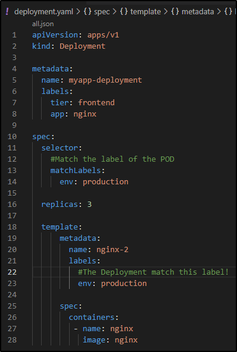

Demo - Deployment
Per creare un Deployment file, ci basta usare il template
di ReplicaSet e cambiare alcuni elementi come il "tier:

Usiamo il comando create per creare il deployment:

Ora possiamo vedere la gerarchia di elementi creati:
 x
x
Ovviamente possiamo usare il comando "describe" per

Altro comando utile "kubectl get all"